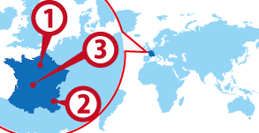

Paris
Paris Nice
Nice Tours
Tours
ワーホリ協定国一覧へ戻る

フランス人気都市 BEST3
フランス基本情報
| 首都 | Paris |
|---|---|
| 言語 | French |
| 面積 | 632,759 km²(世界43位) |
| 人口 | 61,083,916人(世界20位) |
| 通貨 | Euro（EUR） |
＊2014 年10 月時点の数値です
| 日本時間 | Parris |
|---|---|
 1月1日 09:00am |
 1月1日 02:00am |
＊サマータイムの期間は時差が変動します
| 首都 | Parris |
|---|---|
| 面積 | 632,759 km²(世界43位) |
| 人口 | 61,083,916人(世界20位) |
| 言語 | French |
|---|---|
| 通貨 | Euro（EUR） |
＊2014 年10 月時点の数値です |
|
日本との時差
| 日本時間 | Parris |
|---|---|
|
1月1日 09:00am |
1月1日 02:00am |
＊サマータイムの期間は時差が変動します
フランスってどんな国？
歴史ある街並みが絵になるおしゃれな街パリ、人気ファッションブランドも多く、農業国、フランス料理、フランスワインも有名。 ヨーロッパ歴史の要であるが歴史を知っている日本人は少ないので是非歴史を知ってからいってほしい。建物一つ一つの歴史や意味がわかるとフランスはもっと楽しくなるだろう。 自己主張が強いことも知られているが日本人的に行動していてはままならないだろう。 日本のアニメファンが一番浸透しており、日本の専門学校のようなアニメ学校がある国はヨーロッパでもフランスだけだろう。 日本食レストランもあるのでバイトする分には見つけられるだろうが日本語はラテン語派生ではないので他の国から来ているフランス語を習っている生徒よりも日本人は学習スピードが遅く苦労するだろう。 1年でしゃべれるようになるには相当の努力が必要だ。
▼▼▼まずは無料セミナーへ！ワーキングホリデー＆留学の無料セミナーはこちら！▼▼▼